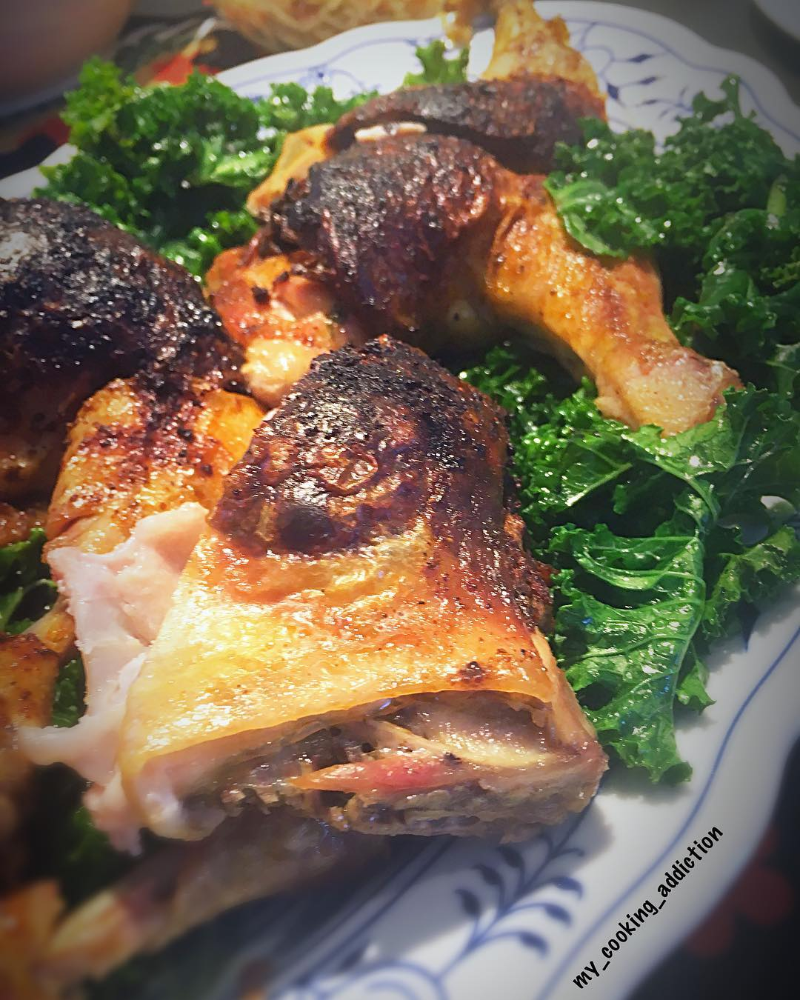

Plnené kuracie stehná podľa @mojebistro — Normy Jedál
Ahojte
Je štvrtok a s ním ďalší nový recept.. Prečítajte a napíšte si zoznam čo máte zajtra nakúpiť aby ste cez víkend túto mňamku mohli pripraviť▪️🔝
#kuraciestehna #plnenekuraciestehna #nádivka #plnka #chicken #food #myfood #foodpic #uzasnejedlo #uzasnejidlo #coztakhledatsispenat #mojejedlo #kadeřávek #grillchicken #bloggers #slovakblogger #foodblogger @czechfoodies #czechfoodies